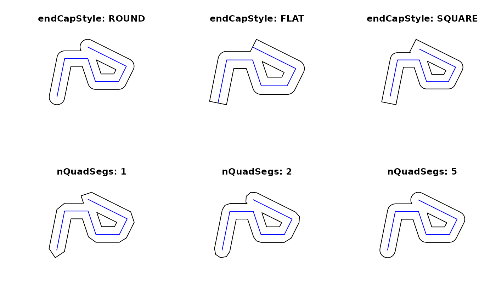
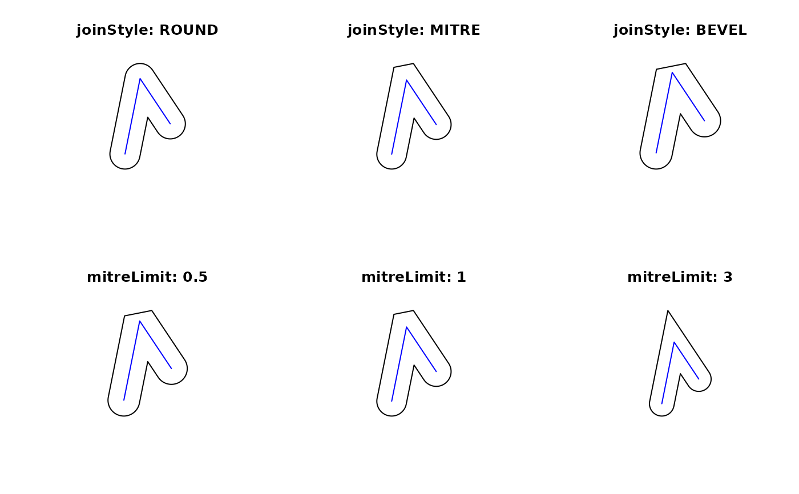
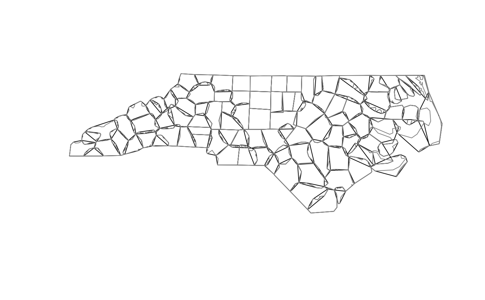
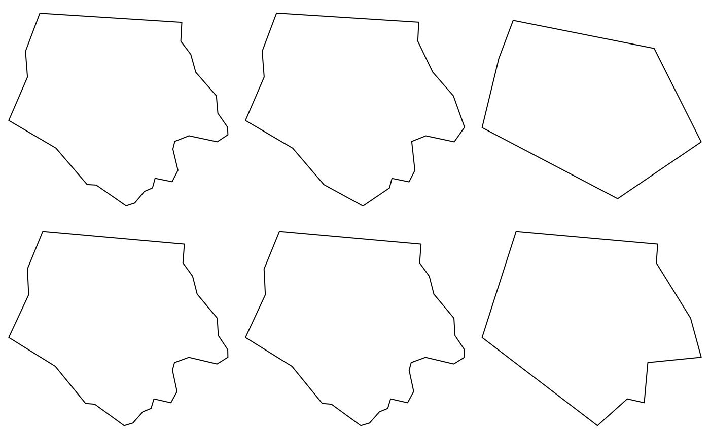
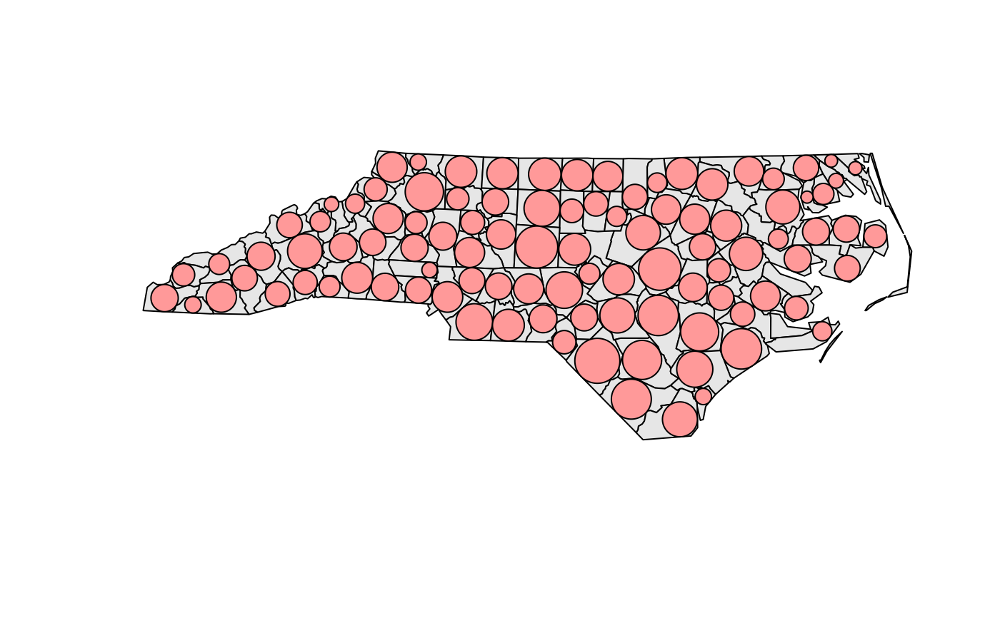
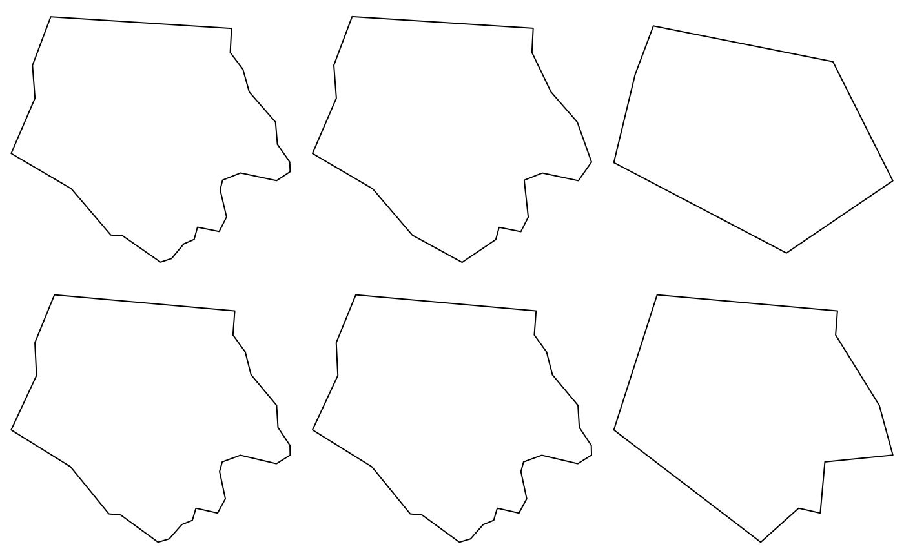
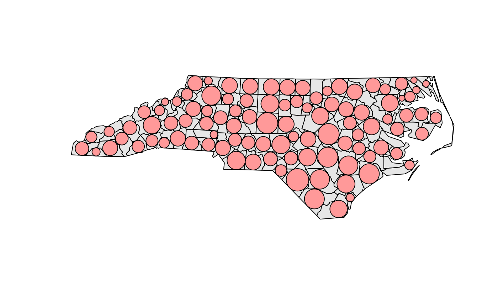
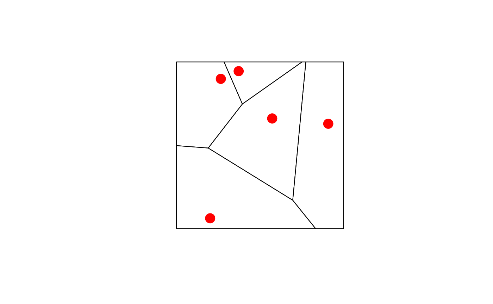
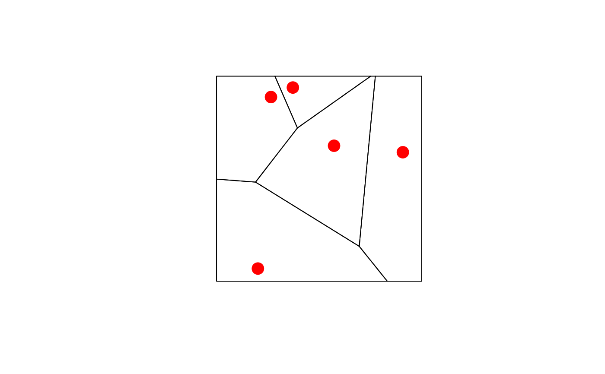

Geometric unary operations on simple feature geometry sets
Source:R/geom-transformers.R
geos_unary.RdGeometric unary operations on simple feature geometries. These are all generics, with methods for sfg, sfc and sf objects, returning an object of the same class. All operations work on a per-feature basis, ignoring all other features.
st_buffer(
x,
dist,
nQuadSegs = 30,
endCapStyle = "ROUND",
joinStyle = "ROUND",
mitreLimit = 1,
singleSide = FALSE,
...
)
st_boundary(x)
st_convex_hull(x)
st_simplify(x, preserveTopology, dTolerance = 0)
st_triangulate(x, dTolerance = 0, bOnlyEdges = FALSE)
st_inscribed_circle(x, dTolerance, ...)
st_minimum_rotated_rectangle(x, ...)
st_voronoi(x, envelope, dTolerance = 0, bOnlyEdges = FALSE)
st_polygonize(x)
st_line_merge(x)
st_centroid(x, ..., of_largest_polygon = FALSE)
st_point_on_surface(x)
st_reverse(x)
st_node(x)
st_segmentize(x, dfMaxLength, ...)Arguments
- x
object of class
sfg,sfcorsf- dist
numeric; buffer distance for all, or for each of the elements in
x; in casedistis aunitsobject, it should be convertible toarc_degreeifxhas geographic coordinates, and tost_crs(x)$unitsotherwise- nQuadSegs
integer; number of segments per quadrant (fourth of a circle), for all or per-feature
- endCapStyle
character; style of line ends, one of 'ROUND', 'FLAT', 'SQUARE'
- joinStyle
character; style of line joins, one of 'ROUND', 'MITRE', 'BEVEL'
- mitreLimit
numeric; limit of extension for a join if
joinStyle'MITRE' is used (default 1.0, minimum 0.0)- singleSide
logical; if
TRUE, single-sided buffers are returned for linear geometries, in which case negativedistvalues give buffers on the right-hand side, positive on the left.- ...
ignored
- preserveTopology
logical; carry out topology preserving simplification? May be specified for each, or for all feature geometries. Note that topology is preserved only for single feature geometries, not for sets of them. If not specified (i.e. the default), then it is internally set equal to
FALSEwhen the input data is specified with projected coordinates orsf_use_s2()returnsFALSE. Ignored in all the other cases (with a warning when set equal toFALSE) since the function implicitly callss2::s2_simplifywhich always preserve topological relationships (per single feature).- dTolerance
numeric; tolerance parameter, specified for all or for each feature geometry. If you run
st_simplify, the input data is specified with long-lat coordinates andsf_use_s2()returnsTRUE, then the value ofdTolerancemust be specified in meters.- bOnlyEdges
logical; if TRUE, return lines, else return polygons
- envelope
object of class
sfcorsfgcontaining aPOLYGONwith the envelope for a voronoi diagram; this only takes effect when it is larger than the default envelope, chosen whenenvelopeis an empty polygon- of_largest_polygon
logical; for
st_centroid: ifTRUE, return centroid of the largest (sub)polygon of aMULTIPOLYGONrather than of the wholeMULTIPOLYGON- dfMaxLength
maximum length of a line segment. If
xhas geographical coordinates (long/lat),dfMaxLengthis either a numeric expressed in meter, or an object of classunitswith length unitsradordegree; segmentation in the long/lat case takes place along the great circle, using st_geod_segmentize.
Value
an object of the same class of x, with manipulated geometry.
Details
st_buffer computes a buffer around this geometry/each geometry. If any of endCapStyle,
joinStyle, or mitreLimit are set to non-default values ('ROUND', 'ROUND', 1.0 respectively) then
the underlying 'buffer with style' GEOS function is used.
If a negative buffer returns empty polygons instead of shrinking, set st_use_s2() to FALSE
See postgis.net/docs/ST_Buffer.html for details.
st_boundary returns the boundary of a geometry
st_convex_hull creates the convex hull of a set of points
st_simplify simplifies lines by removing vertices.
st_triangulate triangulates set of points (not constrained). st_triangulate requires GEOS version 3.4 or above
st_inscribed_circle returns the maximum inscribed circle for polygon geometries.
For st_inscribed_circle, if nQuadSegs is 0 a 2-point LINESTRING is returned with the
center point and a boundary point of every circle, otherwise a circle (buffer) is returned where
nQuadSegs controls the number of points per quadrant to approximate the circle.
st_inscribed_circle requires GEOS version 3.9 or above
st_minimum_rotated_rectangle returns the minimum
rotated rectangular POLYGON which encloses the input geometry. The
rectangle has width equal to the minimum diameter, and a longer
length. If the convex hill of the input is degenerate (a line or
point) a linestring or point is returned.
st_voronoi creates voronoi tesselation. st_voronoi requires GEOS version 3.5 or above
st_polygonize creates polygon from lines that form a closed ring. In case of st_polygonize, x must be an object of class LINESTRING or MULTILINESTRING, or an sfc geometry list-column object containing these
st_line_merge merges lines. In case of st_line_merge, x must be an object of class MULTILINESTRING, or an sfc geometry list-column object containing these
st_centroid gives the centroid of a geometry
st_point_on_surface returns a point guaranteed to be on the (multi)surface.
st_reverse reverses the nodes in a line
st_node adds nodes to linear geometries at intersections without a node, and only works on individual linear geometries
st_segmentize adds points to straight lines
See also
chull for a more efficient algorithm for calculating the convex hull
Examples
## st_buffer, style options (taken from rgeos gBuffer)
l1 = st_as_sfc("LINESTRING(0 0,1 5,4 5,5 2,8 2,9 4,4 6.5)")
op = par(mfrow=c(2,3))
plot(st_buffer(l1, dist = 1, endCapStyle="ROUND"), reset = FALSE, main = "endCapStyle: ROUND")
plot(l1,col='blue',add=TRUE)
plot(st_buffer(l1, dist = 1, endCapStyle="FLAT"), reset = FALSE, main = "endCapStyle: FLAT")
plot(l1,col='blue',add=TRUE)
plot(st_buffer(l1, dist = 1, endCapStyle="SQUARE"), reset = FALSE, main = "endCapStyle: SQUARE")
plot(l1,col='blue',add=TRUE)
plot(st_buffer(l1, dist = 1, nQuadSegs=1), reset = FALSE, main = "nQuadSegs: 1")
plot(l1,col='blue',add=TRUE)
plot(st_buffer(l1, dist = 1, nQuadSegs=2), reset = FALSE, main = "nQuadSegs: 2")
plot(l1,col='blue',add=TRUE)
plot(st_buffer(l1, dist = 1, nQuadSegs= 5), reset = FALSE, main = "nQuadSegs: 5")
plot(l1,col='blue',add=TRUE)

par(op)
l2 = st_as_sfc("LINESTRING(0 0,1 5,3 2)")
op = par(mfrow = c(2, 3))
plot(st_buffer(l2, dist = 1, joinStyle="ROUND"), reset = FALSE, main = "joinStyle: ROUND")
plot(l2, col = 'blue', add = TRUE)
plot(st_buffer(l2, dist = 1, joinStyle="MITRE"), reset = FALSE, main = "joinStyle: MITRE")
plot(l2, col= 'blue', add = TRUE)
plot(st_buffer(l2, dist = 1, joinStyle="BEVEL"), reset = FALSE, main = "joinStyle: BEVEL")
plot(l2, col= 'blue', add=TRUE)
plot(st_buffer(l2, dist = 1, joinStyle="MITRE" , mitreLimit=0.5), reset = FALSE,
main = "mitreLimit: 0.5")
plot(l2, col = 'blue', add = TRUE)
plot(st_buffer(l2, dist = 1, joinStyle="MITRE",mitreLimit=1), reset = FALSE,
main = "mitreLimit: 1")
plot(l2, col = 'blue', add = TRUE)
plot(st_buffer(l2, dist = 1, joinStyle="MITRE",mitreLimit=3), reset = FALSE,
main = "mitreLimit: 3")
plot(l2, col = 'blue', add = TRUE)

par(op)
nc = st_read(system.file("shape/nc.shp", package="sf"))
#> Reading layer `nc' from data source
#> `/tmp/Rtmp8DO0LL/temp_libpath62db7d5a34da/sf/shape/nc.shp'
#> using driver `ESRI Shapefile'
#> Simple feature collection with 100 features and 14 fields
#> Geometry type: MULTIPOLYGON
#> Dimension: XY
#> Bounding box: xmin: -84.32385 ymin: 33.88199 xmax: -75.45698 ymax: 36.58965
#> Geodetic CRS: NAD27
nc_g = st_geometry(nc)
plot(st_convex_hull(nc_g))
plot(nc_g, border = grey(.5), add = TRUE)

# st_simplify examples:
op = par(mfrow = c(2, 3), mar = rep(0, 4))
plot(nc_g[1])
plot(st_simplify(nc_g[1], dTolerance = 1e3)) # 1000m
plot(st_simplify(nc_g[1], dTolerance = 5e3)) # 5000m
nc_g_planar = st_transform(nc_g, 2264) # planar coordinates, US foot
plot(nc_g_planar[1])
plot(st_simplify(nc_g_planar[1], dTolerance = 1e3)) # 1000 foot
plot(st_simplify(nc_g_planar[1], dTolerance = 5e3)) # 5000 foot
 par(op)
if (compareVersion(sf_extSoftVersion()[["GEOS"]], "3.9.0") > -1) {
nc_t = st_transform(nc, 'EPSG:2264')
x = st_inscribed_circle(st_geometry(nc_t))
plot(st_geometry(nc_t), asp = 1, col = grey(.9))
plot(x, add = TRUE, col = '#ff9999')
}
set.seed(1)
x = st_multipoint(matrix(runif(10),,2))
box = st_polygon(list(rbind(c(0,0),c(1,0),c(1,1),c(0,1),c(0,0))))
if (compareVersion(sf_extSoftVersion()[["GEOS"]], "3.5.0") > -1) {
v = st_sfc(st_voronoi(x, st_sfc(box)))
plot(v, col = 0, border = 1, axes = TRUE)
plot(box, add = TRUE, col = 0, border = 1) # a larger box is returned, as documented
plot(x, add = TRUE, col = 'red', cex=2, pch=16)
plot(st_intersection(st_cast(v), box)) # clip to smaller box
plot(x, add = TRUE, col = 'red', cex=2, pch=16)
# matching Voronoi polygons to data points:
# https://github.com/r-spatial/sf/issues/1030
# generate 50 random unif points:
n = 100
pts = st_as_sf(data.frame(matrix(runif(n), , 2), id = 1:(n/2)), coords = c("X1", "X2"))
# compute Voronoi polygons:
pols = st_collection_extract(st_voronoi(do.call(c, st_geometry(pts))))
# match them to points:
pts$pols = pols[unlist(st_intersects(pts, pols))]
plot(pts["id"], pch = 16) # ID is color
plot(st_set_geometry(pts, "pols")["id"], xlim = c(0,1), ylim = c(0,1), reset = FALSE)
plot(st_geometry(pts), add = TRUE)
layout(matrix(1)) # reset plot layout
}


par(op)
if (compareVersion(sf_extSoftVersion()[["GEOS"]], "3.9.0") > -1) {
nc_t = st_transform(nc, 'EPSG:2264')
x = st_inscribed_circle(st_geometry(nc_t))
plot(st_geometry(nc_t), asp = 1, col = grey(.9))
plot(x, add = TRUE, col = '#ff9999')
}
set.seed(1)
x = st_multipoint(matrix(runif(10),,2))
box = st_polygon(list(rbind(c(0,0),c(1,0),c(1,1),c(0,1),c(0,0))))
if (compareVersion(sf_extSoftVersion()[["GEOS"]], "3.5.0") > -1) {
v = st_sfc(st_voronoi(x, st_sfc(box)))
plot(v, col = 0, border = 1, axes = TRUE)
plot(box, add = TRUE, col = 0, border = 1) # a larger box is returned, as documented
plot(x, add = TRUE, col = 'red', cex=2, pch=16)
plot(st_intersection(st_cast(v), box)) # clip to smaller box
plot(x, add = TRUE, col = 'red', cex=2, pch=16)
# matching Voronoi polygons to data points:
# https://github.com/r-spatial/sf/issues/1030
# generate 50 random unif points:
n = 100
pts = st_as_sf(data.frame(matrix(runif(n), , 2), id = 1:(n/2)), coords = c("X1", "X2"))
# compute Voronoi polygons:
pols = st_collection_extract(st_voronoi(do.call(c, st_geometry(pts))))
# match them to points:
pts$pols = pols[unlist(st_intersects(pts, pols))]
plot(pts["id"], pch = 16) # ID is color
plot(st_set_geometry(pts, "pols")["id"], xlim = c(0,1), ylim = c(0,1), reset = FALSE)
plot(st_geometry(pts), add = TRUE)
layout(matrix(1)) # reset plot layout
}


 mls = st_multilinestring(list(matrix(c(0,0,0,1,1,1,0,0),,2,byrow=TRUE)))
st_polygonize(st_sfc(mls))
#> Geometry set for 1 feature
#> Geometry type: GEOMETRYCOLLECTION
#> Dimension: XY
#> Bounding box: xmin: 0 ymin: 0 xmax: 1 ymax: 1
#> CRS: NA
#> GEOMETRYCOLLECTION (POLYGON ((0 0, 0 1, 1 1, 0 ...
mls = st_multilinestring(list(rbind(c(0,0), c(1,1)), rbind(c(2,0), c(1,1))))
st_line_merge(st_sfc(mls))
#> Geometry set for 1 feature
#> Geometry type: LINESTRING
#> Dimension: XY
#> Bounding box: xmin: 0 ymin: 0 xmax: 2 ymax: 1
#> CRS: NA
#> LINESTRING (0 0, 1 1, 2 0)
plot(nc_g, axes = TRUE)
plot(st_centroid(nc_g), add = TRUE, pch = 3, col = 'red')

mp = st_combine(st_buffer(st_sfc(lapply(1:3, function(x) st_point(c(x,x)))), 0.2 * 1:3))
plot(mp)
plot(st_centroid(mp), add = TRUE, col = 'red') # centroid of combined geometry
plot(st_centroid(mp, of_largest_polygon = TRUE), add = TRUE, col = 'blue', pch = 3)
mls = st_multilinestring(list(matrix(c(0,0,0,1,1,1,0,0),,2,byrow=TRUE)))
st_polygonize(st_sfc(mls))
#> Geometry set for 1 feature
#> Geometry type: GEOMETRYCOLLECTION
#> Dimension: XY
#> Bounding box: xmin: 0 ymin: 0 xmax: 1 ymax: 1
#> CRS: NA
#> GEOMETRYCOLLECTION (POLYGON ((0 0, 0 1, 1 1, 0 ...
mls = st_multilinestring(list(rbind(c(0,0), c(1,1)), rbind(c(2,0), c(1,1))))
st_line_merge(st_sfc(mls))
#> Geometry set for 1 feature
#> Geometry type: LINESTRING
#> Dimension: XY
#> Bounding box: xmin: 0 ymin: 0 xmax: 2 ymax: 1
#> CRS: NA
#> LINESTRING (0 0, 1 1, 2 0)
plot(nc_g, axes = TRUE)
plot(st_centroid(nc_g), add = TRUE, pch = 3, col = 'red')

mp = st_combine(st_buffer(st_sfc(lapply(1:3, function(x) st_point(c(x,x)))), 0.2 * 1:3))
plot(mp)
plot(st_centroid(mp), add = TRUE, col = 'red') # centroid of combined geometry
plot(st_centroid(mp, of_largest_polygon = TRUE), add = TRUE, col = 'blue', pch = 3)
 plot(nc_g, axes = TRUE)
plot(st_point_on_surface(nc_g), add = TRUE, pch = 3, col = 'red')
#> Warning: st_point_on_surface may not give correct results for longitude/latitude data
plot(nc_g, axes = TRUE)
plot(st_point_on_surface(nc_g), add = TRUE, pch = 3, col = 'red')
#> Warning: st_point_on_surface may not give correct results for longitude/latitude data
 if (compareVersion(sf_extSoftVersion()[["GEOS"]], "3.7.0") > -1) {
st_reverse(st_linestring(rbind(c(1,1), c(2,2), c(3,3))))
}
#> LINESTRING (3 3, 2 2, 1 1)
(l = st_linestring(rbind(c(0,0), c(1,1), c(0,1), c(1,0), c(0,0))))
#> LINESTRING (0 0, 1 1, 0 1, 1 0, 0 0)
st_polygonize(st_node(l))
#> GEOMETRYCOLLECTION (POLYGON ((0 0, 0.5 0.5, 1 0, 0 0)), POLYGON ((0.5 0.5, 0 1, 1 1, 0.5 0.5)))
st_node(st_multilinestring(list(rbind(c(0,0), c(1,1), c(0,1), c(1,0), c(0,0)))))
#> MULTILINESTRING ((0 0, 0.5 0.5), (0.5 0.5, 1 1, 0 1, 0.5 0.5), (0.5 0.5, 1 0, 0 0))
sf = st_sf(a=1, geom=st_sfc(st_linestring(rbind(c(0,0),c(1,1)))), crs = 4326)
if (require(lwgeom, quietly = TRUE)) {
seg = st_segmentize(sf, units::set_units(100, km))
seg = st_segmentize(sf, units::set_units(0.01, rad))
nrow(seg$geom[[1]])
}
#> Linking to liblwgeom 3.0.0beta1 r16016, GEOS 3.8.0, PROJ 6.3.1
#> [1] 5
if (compareVersion(sf_extSoftVersion()[["GEOS"]], "3.7.0") > -1) {
st_reverse(st_linestring(rbind(c(1,1), c(2,2), c(3,3))))
}
#> LINESTRING (3 3, 2 2, 1 1)
(l = st_linestring(rbind(c(0,0), c(1,1), c(0,1), c(1,0), c(0,0))))
#> LINESTRING (0 0, 1 1, 0 1, 1 0, 0 0)
st_polygonize(st_node(l))
#> GEOMETRYCOLLECTION (POLYGON ((0 0, 0.5 0.5, 1 0, 0 0)), POLYGON ((0.5 0.5, 0 1, 1 1, 0.5 0.5)))
st_node(st_multilinestring(list(rbind(c(0,0), c(1,1), c(0,1), c(1,0), c(0,0)))))
#> MULTILINESTRING ((0 0, 0.5 0.5), (0.5 0.5, 1 1, 0 1, 0.5 0.5), (0.5 0.5, 1 0, 0 0))
sf = st_sf(a=1, geom=st_sfc(st_linestring(rbind(c(0,0),c(1,1)))), crs = 4326)
if (require(lwgeom, quietly = TRUE)) {
seg = st_segmentize(sf, units::set_units(100, km))
seg = st_segmentize(sf, units::set_units(0.01, rad))
nrow(seg$geom[[1]])
}
#> Linking to liblwgeom 3.0.0beta1 r16016, GEOS 3.8.0, PROJ 6.3.1
#> [1] 5